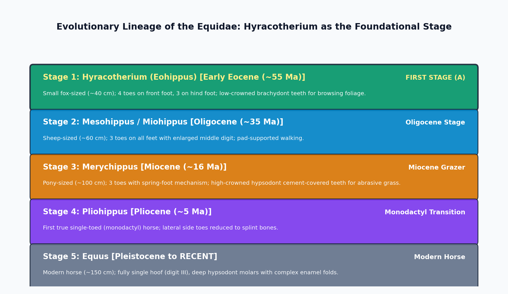

The evolutionary pedigree of the horse (Family Equidae, Order Perissodactyla) is universally celebrated as the most comprehensive, complete, and meticulously documented macroevolutionary sequence in the Cenozoic vertebrate fossil record. Unfolding across 55 million years of North American and Eurasian strata, the lineage documents the transition from small forest-dwelling browsers into large, single-toed grassland runners. The earliest, foundational stage in the evolution of the horse is Hyracotherium (popularly known as Eohippus, the 'Dawn Horse').

| Evolutionary Stage / Genus | Geological Epoch | Shoulder Height | Digit Formula (Front / Hind) | Dental Adaptation & Diet |
|---|---|---|---|---|
| Hyracotherium (Eohippus) | Early Eocene (~55 Ma) | ~35 cm (Fox-sized) | 4 toes / 3 toes (Padded paws) | Brachydont (Low-crowned bunodont); Leaf browsing |
| Mesohippus | Early Oligocene (~35 Ma) | ~60 cm (Sheep-sized) | 3 toes / 3 toes (Middle toe enlarged) | Brachydont; incipient crests (lophodont) |
| Merychippus | Middle-Late Miocene (~16 Ma) | ~100 cm (Pony-sized) | 3 toes / 3 toes (Spring-foot; side toes non-touching) | Hypsodont (High-crowned with cement); Grass grazing |
| Pliohippus | Pliocene (~5 Ma) | ~125 cm | 1 toe / 1 toe (First monodactyl horse) | Advanced hypsodont with folded enamel |
| Equus | Pleistocene to RECENT | ~150 cm (Modern horse) | 1 toe / 1 toe (Single hoof on digit III) | Extremely hypsodont prismatic molars; Grass grazing |